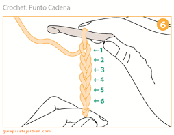
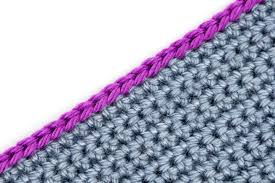
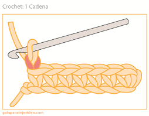
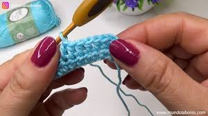
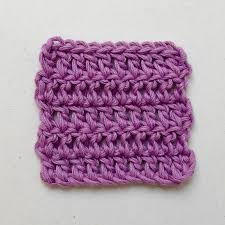
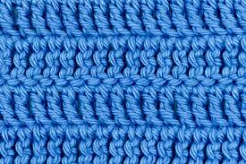
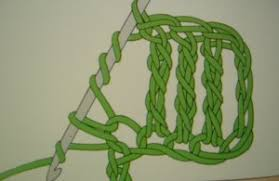

by Lizeth Rodriguez Serna Diciembre 9, 2024.
Una vez tenemos una aguja y un hilo del grosor adecuado, debemos empezar por la base: aprender los puntos básicos de crochet. Si no sabes si tu aguja corresponde al grosor de tu hilo, te dejo por aquí el enlace a la entrada del blog donde lo hablamos. En esta ocasión voy a intentar que cuando veas la abreviatura o el símbolo que indica el punto a tejer, sepas distinguir de qué hablamos.
Podemos dividir los puntos básicos en: sencillos y especiales o combinados.
Entre los puntos básicos sencillos encontramos:
- Cadeneta: c, cd o cad. Se trata del punto con el que empiezan la gran mayoría de los proyectos de crochet.
- Punto raso, enano o corrido: pr, pe o pc. Utilizado para tejer o para unir piezas como granny square.
- Punto bajo o medio punto: abreviatura pb o mp. Ideal para aprender. Con él podemos hacer proyectos sencillos y más adelante complejos e incluso de colorwork. Es el punto que se utiliza para confeccionar amigurumis.
- Punto medio alto o media vareta: pm, pma o pmv. Hay diseñadores que llaman así también al punto bajo extendido.
- Punto alto o vareta: pa o pv. Muy habitual en la confección de prendas y otros diseños. Tiene aproximadamente el doble de altura que el punto bajo.
- Punto alto doble o punto vareta doble: pad o pvd.
- Punto alto triple o punto vareta triple: pat o pvt.
|  |
 |
 |
 |
 |
 |
 |